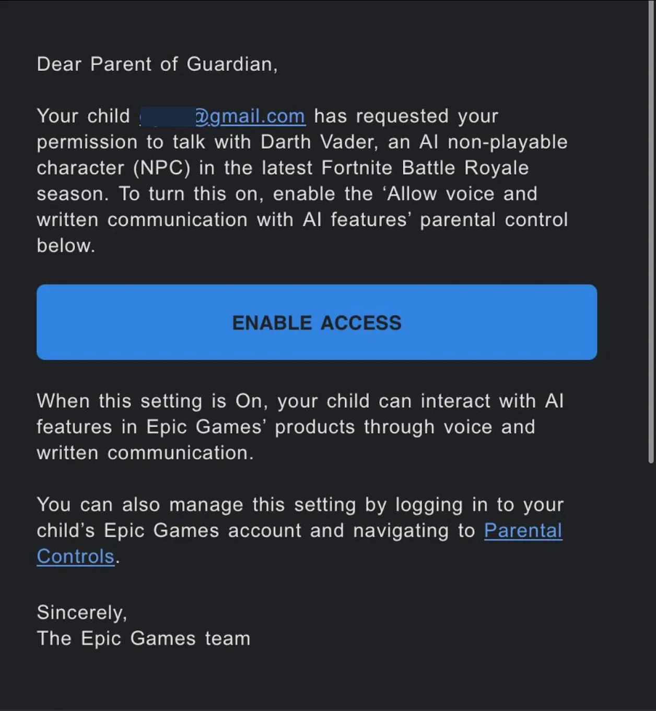

When Fortnite's AI Darth Vader talks to children
Originally posted on LinkedIn, June 13, 2025.
My son sent me a permission request to talk to Darth Vader. Then I received an email about Fortnite on PlayStation: “Please approve a conversation with Darth Vader, a new AI character in Fortnite.”
It’s official. AI has entered the living room through the PlayStation, and our children are talking to it as if it were just another part of the game.
The character runs on a language model and holds voice conversations. It remembers. It influences.
As both a parent and a technologist, this raises several red flags for me. Do children understand when they are interacting with a real character and when they are talking to a machine? Do parents understand what they are approving? Has anyone explained where these conversations are stored?
I don’t know exactly what I think about this yet, but I know one thing. We are entering an era in which AI pretends to be a friend and talks to our children. It’s time we treated it accordingly.
